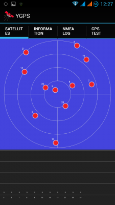
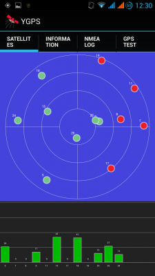
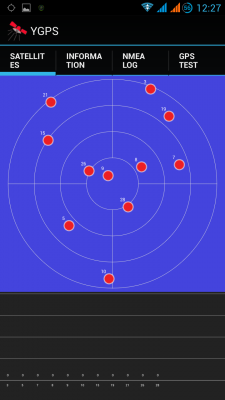
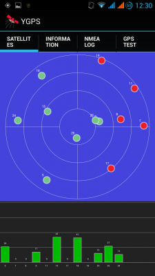
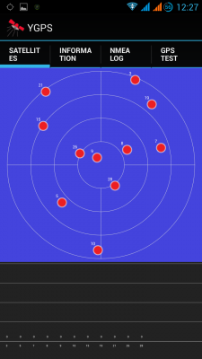
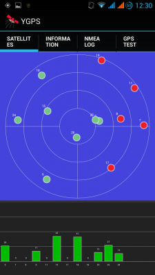

 
  В смартфонах Huawei, привезенных из Китая не всегда корректно работает GPS навигация в старанах СНГ. Это связано с тем что у них по умолчанию отключен ЕРО. EPO - это файл с местоположением спутников на орбите для данной местности, где находится пользователь, по умолчанию ЕРО выключено и его надо включить в системном меню.
Небольшая инструкция
Включаем Wifi или мобильный интернет;
Входим в системное меню *#*#3646633#*#* (MobileUncle Tools), переходим в Location> Location Based Servise>EPO ставим галочки Enable EPO и Auto Download далее возвращаемся назад и выбираем YGPS. На закладке Information жмем Full, далее Cold, затем A-GPS restart. идем на закладку Sattelites -
и ждем, когда будет зафиксирован сигнал (может потребоваться до десятков минут - появятся изначально красные точки, потом они будут зелеными.).
 
Выходим из YGPS и системного меню. Выключаем wifi или интернет - оставляем в меню только данные о место положении по спутникам GPS.
Теперь устройство находит 10-20 спутников, сигнал не пропадает, холодный старт на улице занимает 20 - 30 сек.
Небольшая оговорка - настраивать GPS лучше всего на улице, в крайнем случае на балконе. Сидя в помещении получить какой либо прием GPS спутников вряд ли получится.
Также на уровень сигнала большое влияние имеет погода. В большинстве смартфонов Huawei GPS пленочная антенна, которая не способна хорошо принимать сигнал спутников при плохой погоде.